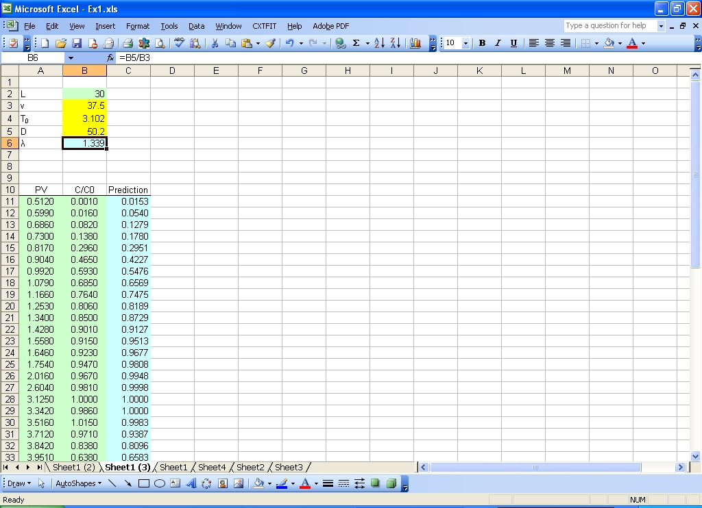
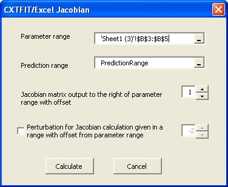
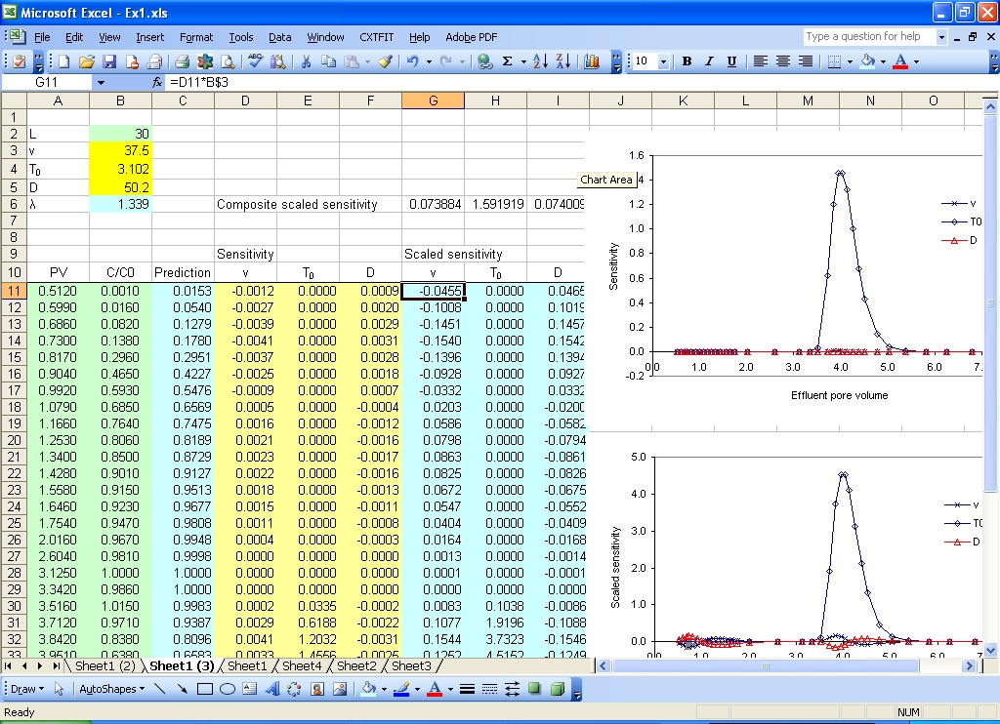

Section 4: Sensitivity Analysis
Suppose that we are interested in the sensitivity for dispersion coefficient, velocity, and pulse volume. We will copy sheet1 we obtained in Section 2 and conduct sensitivity analysis.- Make a copy of Sheet1 similar to Step 1 in Section 3
- Change a parameter range
- Open Jacobian dialog to calculate and output the Jacobian matrix
- More sensitivity analysis
Since we are interested in dispersion coefficient, pulse duration, and velocity we will input the dispersion coefficient in B5 so that the three parameters are in a continuous range in the new sheet (Sheet1 (3)).
Type in the formula =B5/B3 (lambda=D/v) in B6 for dispersivity calculation. The dispersivity is further used in column C for prediction calculation in the same way as in Section 2 (Fig. 4.1).

Fig. 4.1 Change the parameter range to analyze sensitivity for velocity, dispersion coefficient, and pulse duration.
Select menu CXTFIT->Calculate sensitivity... to open Jacobian dialog (Fig. 4.2).
Select the new parameter range, change the offset to 1, and click Calculate (Fig. 4.2).
The Jacobian matrix is output next to the prediction range because the offset is set to 1 (Fig. 4.3).

Fig. 4.2 Jacobian dialog
Type in the formula =D11*B$3, =E11*B$4, =F11*B$5 in cell G11, H11, and I11, and double click on the right bottom corner of these cells to extend the formula to calculate the scaled sensitivity in column D, E, and F for velocity, pulse, and dispersion coefficient (Fig. 4.3).
Type in the formula =SQRT(SUMSQ(G11:G46)/COUNT(G11:G46)) in G6 to calculate composite scaled sensitivity for v. Copy cell G6 and paste in cell H6 and I6 for pulse and dispersion coefficient. The sensitivity is shown in the plot in Fig. 4.3. The pulse appears to be relatively very sensitive while v and D are relative insensitive. This may suggest that a small error in pulse may have significant impact on the model prediction, as well as the estimate of v and D.

Fig. 4.3 Sensitivity analysis results